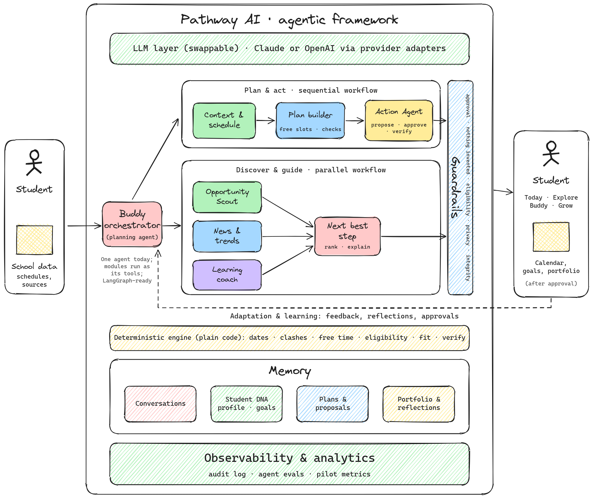

Pathway AI
Make the most of today.
Build a better tomorrow.
An AI companion that helps high school students cut through the overwhelm, find what fits them, and build a path they're proud of, with counselor-style guidance alongside school counselors.
The problem
Every student carries four questions, mostly alone.
Uncertainty: what matters, and where to start.
Discovery: opportunities and trends that suit them.
Overwhelm: everything scattered, no time to think.
The future: real readiness for college and beyond.
The information is everywhere. What's missing is personal guidance, and too often that depends on access to a private counselor.
What Pathway does
One companion. Three roles.
Someone to talk to, encouragement, and help clearing your head.
The scattered week in one calm view, with plans that fit real free time.
Opportunities that fit, what to do next, and a clear path to college.
The core promise: Pathway suggests; the student decides. Nothing changes without a clear yes.
See it in action
A day with Maya, a 10th grader
Architecture
Friendly on top. Reliable underneath.

- Ask: the student asks Buddy, the orchestrating agent.
- Think and use tools: Buddy calls the AI model and up to six tools.
- Facts from code: schedules, free time, eligibility and fit come from a tested rules engine.
- Propose: changes become a proposal. Nothing is saved yet.
- Approve: the student sees what will change and says yes or not now.
- Execute and verify: one transaction, every change checked, every step logged.
| Front end | React + TypeScript (Vite), mobile-first, Dusk/Dark/Light themes |
|---|---|
| Back end | Node.js + TypeScript (Fastify), validated APIs |
| AI | Provider-agnostic: Claude, OpenAI, or local models via Ollama |
| Agent | One orchestrator with typed tools; LangGraph-ready |
| Data | Prisma: SQLite for development, PostgreSQL for production |
Trust by design
Built for teenagers, so built to be trusted.
No change without approval.
No made-up deadlines, links, news or achievements.
Export or delete everything, anytime.
The coach teaches; it never does graded work.
Measuring impact
Four outcomes we'll measure in the pilot
Student-reported stress and sense of control.
Saved opportunities that become applications.
Approved plans completed on time.
Experiences captured and reflected on each term.
Try it yourself
Run it in your browser
Open the repository on GitHub › Code › Codespaces › Create codespace on main, then run npm run dev. AI is optional: add Claude, OpenAI or Ollama settings to .env (never commit keys).